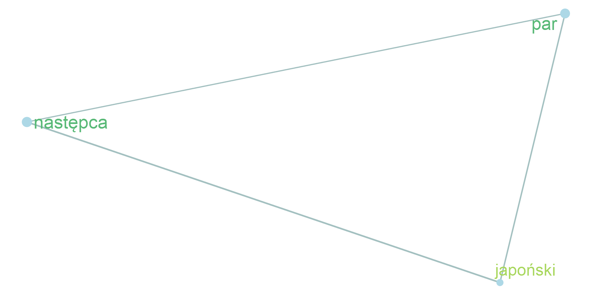
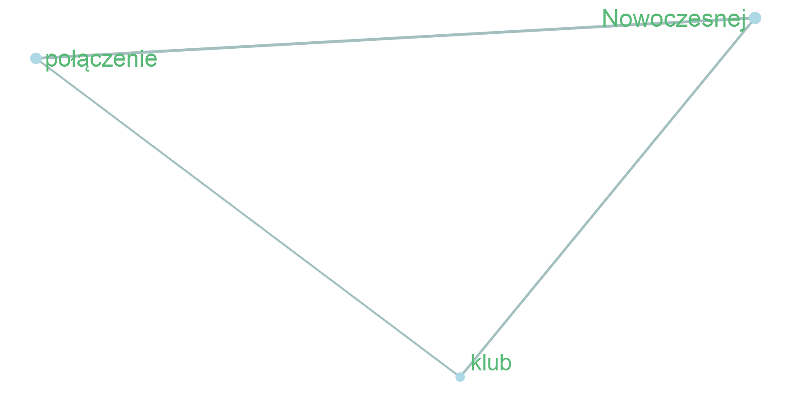

Czerwiec
Wstęp
Opis modelu wykorzystanego do wygenerowania podsumowania znajduje się w zakładce Metodologia.
Poszczególne słowa zostały automatycznie pogrupowane na tematy na podstawie informacji o ich występowaniu w tych samych akapitach i artykułach.
Na wykresach przedstawiono współwystępowanie poszczególnych słów oraz ich kluczowość. Im czcionka jest większa i ciemniejsza, tym wyższa jest kluczowość słowa w danym miesiącu. Linie łączące wybrane słowa oznaczają, że podobieństwo cosinusowe między ich embeddingami wynosi co najmniej 0,4. W celu uproszczenia wizualizacji dla każdego punktu na grafie wybrano maksymalnie dwa połączenia o największym stopniu podobieństwa, które spełniają wskazane kryterium. Podobieństwo cosinusowe wyznaczano za pomocą embeddingów, które są wektorową reprezentacją słów i przechowują informację o ich współwystępowaniu w tych samych akapitach i artykułach. W przypadku grafu, który prezentuje powiązania między słowami ze wszystkich tematów, minimalne podobieństwo wynosi 0,6.
Na wykresach tematycznych przedstawiono nie więcej niż 40 najistotniejszych słów. Analogicznie na głównym grafie umieszczono nie więcej niż 200 najistotniejszych słów w danym miesiącu.
Powiązania między słowami
Wybrane słowa kluczowe
Lista tematów
Temat 1

Temat 2

Temat 3

Temat 4

Temat 5

Temat 6

Temat 7

Temat 8

Temat 9

Temat 10

Temat 11

Temat 12

Temat 13

Temat 14

Temat 15

Temat 16

Temat 17

Temat 18

Temat 19

Temat 20

Temat 21

Temat 22

Temat 23

Temat 24

Temat 25

Temat 26

Temat 27

Temat 28

Temat 29

Temat 30

Temat 31

Temat 32

Temat 33

Temat 34

Temat 35

Temat 36

Temat 37

Temat 38

Temat 39

Temat 40

Temat 41
